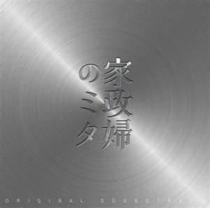
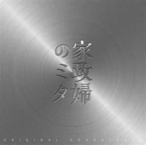

Kaseifu no Mita(Japanese Drama)
These are some information about the Drama.
Title: Kaseifu no Mita
Genre: Mystery, family
Episodes: 11
Main Characters: Shirakawa Yumi as Harumi Akemi
Hasegawa Hiroki as Asuda Keiichi
Kutsuna Shiori as Asuda Yui
Nakagawa Taishi as Asuda Kakeru
Ayabe Shuto as Asuda Kaito
Honda Miyu as Asuda Kii
Kaseifu no Mita (I am Mita, your Housekeeper) is a 2011 Japanese television drama series.
The story revolves around a family who is grieving over their mother's recent suicide.
They hired Mita as a housekeeper to upkeep the house, which has been thrown into disarray.
Mita, who is played by actress Nanako Matsushima, will do anything that her employer orders her to do,
except smiling or revealing her past.